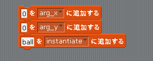

Scratch is developed by the Lifelong Kindergarten Group at the MIT Media Lab. See http://scratch.mit.edu
プレハブのインスタンス化
このページではショットボタンを押したら Cat のいる場所に Ball を表示してみたいと思います。
まずキーボードのショットキー(今回はzキー)を押しているかどうかの判定はジャンプと同様に「Input」クラスの「GetAxis」というメソッドを"Fire1"を指定して使います。すると z キーを押していると true、話していると false という値が取得できます。
次に Ball の表示ですが、プレハブとインスタンスのページに書いたように Ball は「プレハブ」に相当しますのでインスタンス化してインスタンスを作る必要があります。
Unity で実際にインスタンス化を行うためには Instantiate というメソッドを使いますが、今回の scratch2unity で Ball をインスタンス化するためには図1の様なスクリプトを書きます。
最初の2行は Ball を表示させる座標パラメータで、それぞれ x 、 y 座標に相当します。
最後の行でパラメーターに「ball」を指定して Ball をインスタンス化させています。
なお本来の Unity はいくらでもインスタンスを作ることが出来ますが、scratch2unity では同時に1つしかインスタンスを作れないという制約があります。
図1: Ball をインスタンス化するスクリプト

試しにこのスクリプトを Cat の Start イベントの中に書くと、実行開始直後に 0, 0 座標に Ball が表示されます。
ちなみにこのスクリプトは Cat だけでなくどのゲームオブジェクトのスクリプトからでも実行可能です。
従って、Ball のスクリプト内で Ball をインスタンス化することも出来ますし、(まだ作ってませんが)敵キャラの Bat のスクリプト内で Ball をインスタンス化することも出来ます。